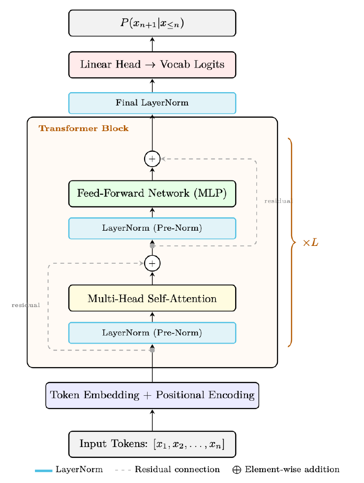

1.3 The Transformer block, from the book
All the pieces, stacked into
one repeating block

The decoder-only Transformer block (GPT-style, Pre-Norm)
Source: Roitman, Hitchhiker's Guide to Agentic AI, Fig. 1.3, p.40
What to notice
1
Attention and a small neural network (the feed-forward layer) sit one after the other inside the block.
2
The dashed lines are residual connections: the input skips around each step and is added back, which keeps deep stacks trainable.
3
This block is repeated many times, then a final step turns the result into scores for the next token.
In plain terms
Feed-forward network
A small per-word neural network that stores much of the model's knowledge.
Residual connection
A shortcut that adds a layer's input to its output, so signal is never lost.